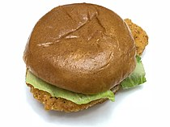

Chicken Sandwich

Description
A burger with chicken as the patty.
Ingredients
- 4 chicken breast halves
- 1/2 cup pickle juice
- 1/4 cup water
- 1/2 cup milk
- 1 large egg
- Oil
- 4 hamburger buns
- Pickles, lettuce, tomato, and cheese
- 1/2 cup mayonnaise
- 1 tsp dijon mustard
- 3 tsp yellow mustard
- 2 tsp barbecue sauce
- 2 tbsp honey
- 1/2 tsp garlic powder
- 1/2 tsp paprika
- 1 tsp lemon juice
Steps
- Marinate the chicken
- Make the sauce
- Mix breading ingredients together
- Mix milk and egg
- Add 2-3 cups of oil to large saucepan and heat oil to 350 degrees Fahrenheit
- Coat the chicken
- Pan fry
- Assemble Sandwich
Credits